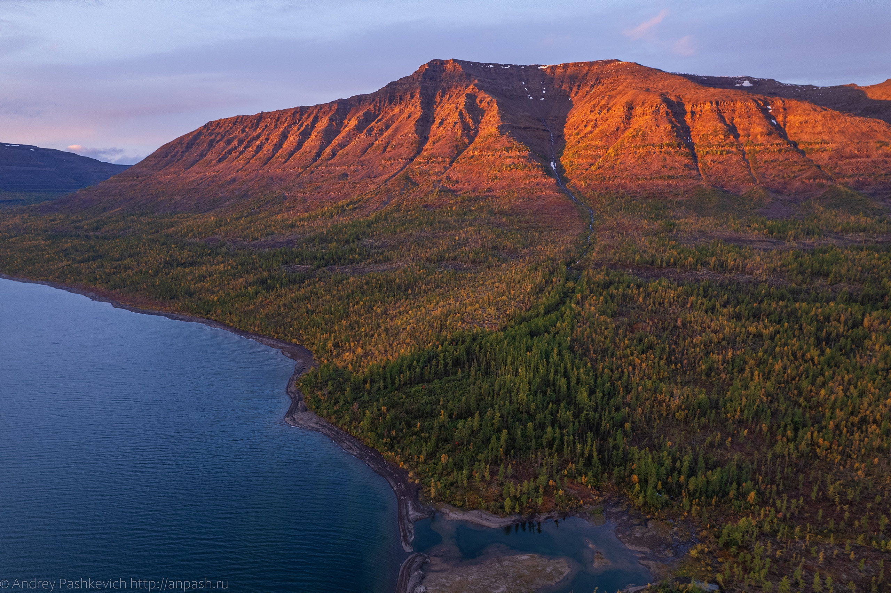

Общая информация
Плато Путорана — это большое плато на севере Красноярского края, за Полярным кругом. Практически нетронуто людьми. Здесь много рек, озёр, водопадов и высоких скал. Туристы приезжают, чтобы увидеть необычную природу и красивые виды.
Природа и ландшафт
- На плато растут тайга и тундра.
- Много чистых озёр с прозрачной водой.
- Высокие водопады, глубокие каньоны, крутые скалы.
- Лето прохладное, +15–16 °C.
- Зима очень холодная, −40 °C.
- Белые ночи летом, северное сияние зимой.
Животные и растения
- Редкие животные: олени, росомахи, медведи.
- Много птиц: орлы и соколы.
- Мох, лишайники, кустарники и редкие цветы растут в тундре.
Почему стоит посетить
- Сделать фотографии озёр и гор.
- Ходить в походы и осматривать достопримечательности.
- Наблюдать животных в их естественной среде.
- Отдохнуть от городского шума.